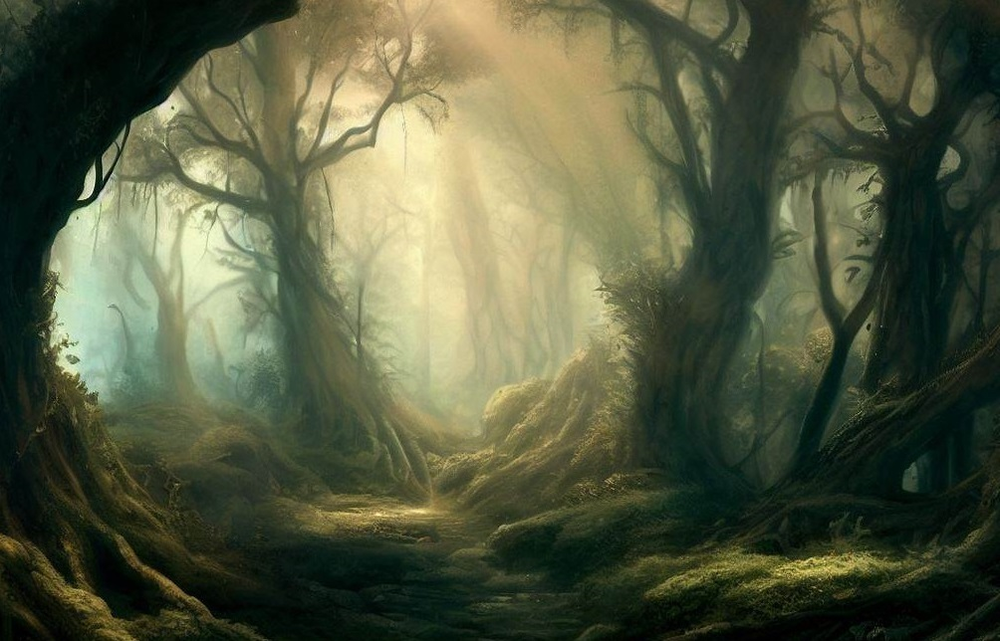

Florestas de Valmoria
Florestas de Valmória são lugares onde a aventura e o perigo se misturam. Ela é formada por árvores altas e densas, que criam sombras e sons estranhos. Em seu interior existem diversos caminhos, trilhas e clareiras, que podem levar a lugares maravilhosos ou terríveis. Uma floresta de Valmória é um lugar onde se pode encontrar amigos ou inimigos, tesouros ou armadilhas, magia ou maldição.
O sistema de exploração fica sob controle do jogador. Abaixo, existem três opções de ações nas florestas: o jogador pode caçar, explorar ou acampar conforme for sua vontade. Para que concretize a ação, deve clicar no botão de cada seção abaixo
Dica de jogo
Para efeito de regra de tempo no jogo cada dia permite tres acoes. cada ação se passa em um periodo do dia; manha, tarde e noite. a noite o jogador deve acampar e tentar descansar.
Caçando
Ao caçar nas florestas de valmoria você pode se daparar com um coelho ou um urso, pode ser ver em meio a um facil banquete ou em uma armadilha mortal, as possibilidades são infinitas. Para encontros ou testes use o sistema de RPG que lhe agrada mais.
Acampando
O acampamento é a hora em que o personagem descansa e pensa nos desafios do dia que se passou. No entanto, nem sempre é assim, ao acampar o personagem está vulnerável aos mais diversos fatores e perigos. Para encontros ou testes use o sistema de RPG que lhe agrada mais.